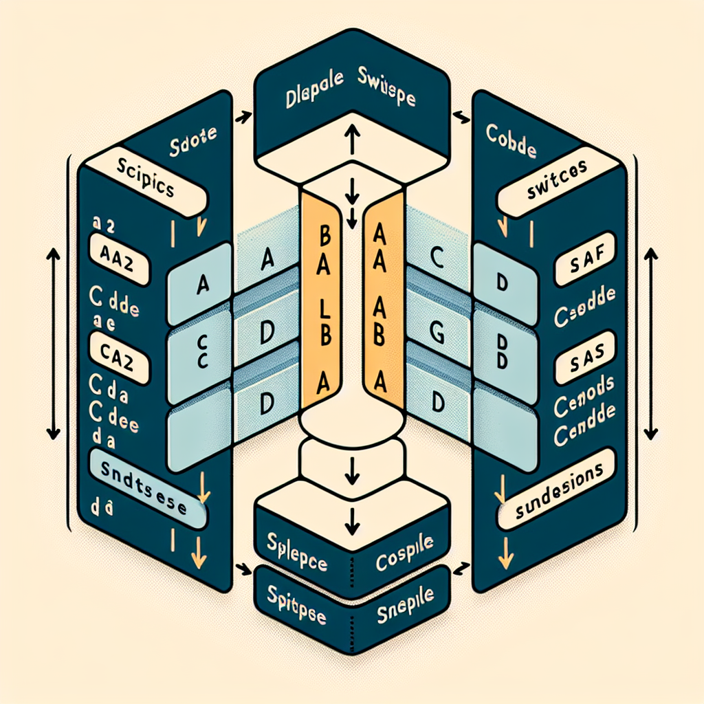

# Example: Swapping two columns by index
data <- data.frame(A = 1:5, B = 6:10, C = 11:15)
data A B C
1 1 6 11
2 2 7 12
3 3 8 13
4 4 9 14
5 5 10 15data <- data[c(1, 3, 2)]
data A C B
1 1 11 6
2 2 12 7
3 3 13 8
4 4 14 9
5 5 15 10Steven P. Sanderson II, MPH
September 23, 2024
Programming, How to swap columns in R, R switch columns by index, Rearrange columns in R, R data frame column order, Base R column manipulation, R programming for beginners, Data manipulation in R, R column swapping examples, Efficient R coding practices, R data frame operations
Welcome to the world of R programming, where data manipulation is a crucial skill. One common task you may encounter is the need to switch two columns in a data frame. Understanding how to efficiently rearrange data can significantly enhance your data analysis workflow. This guide will walk you through the process of switching columns using Base R, with multiple examples to help you master this essential task.
A data frame in R is a table or a two-dimensional array-like structure that holds data. It is similar to a spreadsheet or SQL table and is used to store data in rows and columns. Each column in a data frame can have data of different types.
Before diving into switching columns, it’s important to familiarize yourself with basic operations. You can create data frames using the data.frame() function, access columns using the $ operator, and perform operations like filtering and sorting.
Switching columns is often needed when preparing data for analysis. For example, you might want to reorder columns for better visualization or to follow the requirements of a specific analysis tool.
Rearranging columns can make data more intuitive and easier to interpret. It can also help in aligning data with documentation or standards that require a specific column order.
One of the simplest ways to switch columns in Base R is through indexing. You can rearrange columns by specifying their order in a new data frame.
A B C
1 1 6 11
2 2 7 12
3 3 8 13
4 4 9 14
5 5 10 15 A C B
1 1 11 6
2 2 12 7
3 3 13 8
4 4 14 9
5 5 15 10In this example, columns B and C are swapped by reordering their indices.
Another approach is to use column names to switch their positions. This method is useful when you are unsure of the column indices or when working with large data frames.
A B C
1 1 6 11
2 2 7 12
3 3 8 13
4 4 9 14
5 5 10 15 A C B
1 1 11 6
2 2 12 7
3 3 13 8
4 4 14 9
5 5 15 10This method swaps columns B and C by specifying their names directly.
subset() FunctionThe subset() function can be employed for advanced column switching, especially when combined with logical conditions.
When dealing with large data frames, performance becomes a concern. Efficient column switching can help reduce computation time and system memory usage.
For large datasets, consider using in-place operations or packages like data.table that offer optimized data manipulation functions.
A common mistake is incorrect indexing, which can lead to unexpected results. Always double-check the indices or names you use.
Ensure that column names are spelled correctly. Even a small typo can cause errors or incorrect data manipulation.
For larger datasets, consider using efficient indexing or parallel processing if supported by your environment.
The dplyr package in R provides a powerful set of tools for data manipulation, including functions to change column positions.
relocate() FunctionUse Base R for simple tasks or when package installation is not an option. Opt for dplyr for larger projects requiring more advanced data manipulation.
Use indexing or dplyr functions to reorder multiple columns simultaneously.
Yes, specify the desired order using indices or names, regardless of their original positions.
R does not allow duplicate column names. Ensure each column has a unique name before switching.
Convert the list to a data frame, switch columns, and convert back if needed.
Yes, you can use similar indexing techniques to manipulate rows.
dplyr.Switching columns in R is a fundamental skill for data manipulation. Whether using Base R or dplyr, understanding these techniques enhances your ability to organize and analyze data effectively. Practice with different datasets, and don’t hesitate to explore further learning resources.
We hope you found this guide helpful! Please share your feedback and feel free to share this article with fellow R enthusiasts.
Happy Coding!
